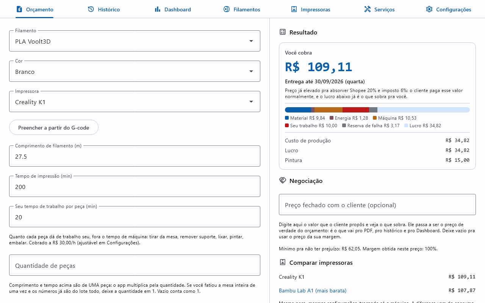
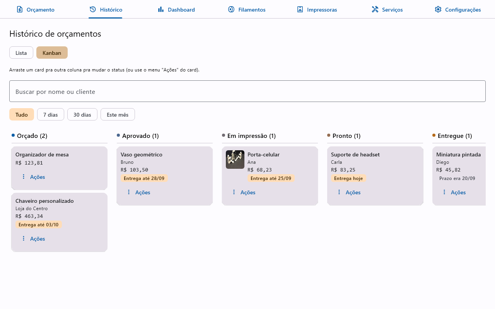
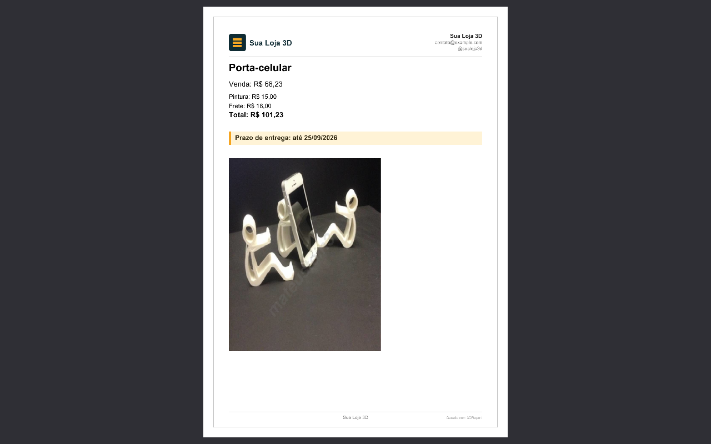

Orçamento e venda de impressão 3D
Saiba quanto cobrar em cada impressão 3D, sem planilha e sem chute
O 3DReport calcula o custo real de produção e sugere o valor de venda com a margem de lucro que você definir, a partir do filamento, da impressora usada e do tempo de impressão de cada peça. Feito para quem vive de vender impressão 3D: do orçamento ao histórico de vendas, gratuito e open source, rodando direto no seu computador.
O app por dentro
Da tela de orçamento ao PDF que vai pro cliente.



Feito para quem vende impressão 3D no dia a dia
Não é só uma calculadora: acompanha o negócio inteiro, do cadastro de filamento até o PDF que vai pro cliente.
Cálculo de custo e preço de venda
Considera filamento, energia, manutenção, retorno do investimento da impressora, custo fixo do negócio, o seu tempo de trabalho, reserva para falhas e margem de lucro.
Várias impressoras e filamentos
Cadastre cada impressora com seu próprio perfil e cada filamento com marca, cores e controle de estoque.
Histórico e dashboard
Consulte orçamentos salvos, filtre por cliente/status/período e veja total vendido, lucro e filamento mais usado.
Exportação em PDF
Orçamento individual, vários orçamentos num PDF só ou catálogo de peças em grade, com marca d'água personalizada.
Serviços e taxas opcionais
Pintura, lixamento e embalagem entram como serviços; Shopee, Mercado Livre, cartão ou Pix entram como canal de venda, cada um com a sua taxa; e o frete aparece como linha separada, sem embutir no preço da peça.
Múltiplas moedas
BRL, USD, EUR ou GBP, com o símbolo e a formatação corretos em toda a interface, no PDF e no copiar e colar.
Visualizador 3D e nível de dificuldade
Anexe o STL do modelo pra girar e dar zoom nele dentro do próprio app, capturar uma foto automática do orçamento e ver um nível de dificuldade sugerido (Fácil, Médio ou Difícil) pra ajudar a precificar peças mais complexas.
Do orçamento à venda concluída
O 3DReport não para no cálculo do preço: acompanha a venda de impressão 3D do primeiro contato com o cliente até a peça entregue.
Cliente vinculado ao orçamento
Nome e contato ficam registrados em cada venda, prontos para consultar depois no histórico.
Status do pedido
Atualize o andamento de cada venda direto na lista, sem planilha paralela pra controlar quem já pagou ou já recebeu.
Dashboard de vendas
Total vendido, lucro acumulado e filamento mais usado, filtrados por período, pra acompanhar como vai o seu negócio de impressão 3D.
Como o cálculo funciona
Fórmula transparente, sem caixa-preta. Detalhes completos e exemplo numérico em docs/pricing-formulas.md.
Instalação
Instaladores nativos, gerados por release, disponíveis para os três sistemas operacionais desktop.
Baixe o .msi na página de releases. O Windows pode avisar "Editor desconhecido": clique em "Mais informações → Executar assim mesmo".
Baixe o .deb na página de releases e instale normalmente pelo gerenciador de pacotes do seu sistema.
Baixe o .dmg na página de releases. Se a abertura for bloqueada, tente clique com o botão direito no app → "Abrir"; se isso não resolver (comum em versões mais recentes do macOS), vá em Ajustes do Sistema → Privacidade e Segurança e clique em "Abrir mesmo assim" no aviso sobre o app bloqueado.
Perguntas frequentes
Quanto custa o 3DReport?
Nada. É gratuito e de código aberto, sem edição paga nem assinatura. O projeto se mantém por doações voluntárias.
Como o 3DReport calcula o preço de uma impressão 3D?
A partir do filamento usado (preço por kg, densidade), do perfil da impressora (consumo de energia, manutenção, retorno de investimento) e dos parâmetros do seu negócio (energia, custo fixo mensal, valor da sua hora de trabalho, reserva para falhas e margem de lucro), o app calcula o valor de produção e sugere o valor de venda com a margem desejada.
O app cobra o meu tempo de trabalho?
Cobra, se você quiser. Em Configurações você informa quanto vale a sua hora e, em cada orçamento, quantos minutos aquela peça deu de trabalho: preparar o arquivo, fatiar, tirar da mesa, remover suporte, lixar, pintar, embalar. Esse é o custo que mais some da conta de quem vende impressão 3D, porque a máquina trabalha sozinha mas todo o resto é você. Enquanto você não informar o valor da sua hora, nada muda e o app continua cobrando acabamento como percentual do material, como antes.
Dá pra orçar mais de uma peça igual de uma vez?
Dá. Informe a quantidade no orçamento e o app multiplica o custo de cada peça, mostrando o total e quanto fica cada unidade. O preparo do pedido (preparar o arquivo, fatiar, montar a mesa) é cobrado uma vez só, então o preço por peça cai sozinho no lote, sem desconto inventado. O comprimento de filamento e o tempo que você informa são de uma peça; se você fatiou a mesa cheia de uma vez, deixe a quantidade em 1.
O 3DReport funciona em quais sistemas operacionais?
Windows, Linux e macOS, com instaladores nativos para cada um.
Meus dados de orçamento ficam salvos onde?
Localmente, no seu computador. O 3DReport não envia nenhum dado para servidores externos.
O 3DReport serve só para orçamento avulso ou também para gerenciar a venda de impressão 3D como negócio?
As duas coisas. Além do cálculo do orçamento, cada venda tem cliente, status do pedido (Orçado, Aprovado, Em impressão, Pronto, Entregue) e entra no histórico e no dashboard, com total vendido, lucro acumulado e filamento mais usado por período.
O que significa o "nível de dificuldade" que aparece ao anexar um STL?
Ao anexar o arquivo STL do modelo, o 3DReport analisa a malha 3D e sugere um nível — Fácil, Médio ou Difícil — combinando quatro sinais: o quanto a forma foge de algo liso e compacto (tipo uma esfera) pro mesmo volume, quanta superfície fica "pendurada" precisando de suporte na impressão (overhang), quantos triângulos a malha tem, e se o arquivo tem várias peças soltas. É uma estimativa geométrica (não simula o fatiador de verdade) pra te ajudar a decidir se vale cobrar uma margem extra por peças mais trabalhosas — a decisão de preço continua sua. Detalhes das fórmulas em docs/pricing-formulas.md.
Como o app trata taxa de marketplace, imposto e frete?
A taxa do canal de venda (Shopee, Mercado Livre, cartão) e o imposto são descontados do que você recebe, então o app sobe o preço o suficiente pra sua margem continuar a mesma, e o lucro que ele mostra já é o líquido. Marketplace e forma de pagamento são um campo só de propósito: somar a taxa da Shopee com a do cartão cobraria em dobro, porque o marketplace já embute o processamento do pagamento. Se você é MEI, o DAS não é percentual, então entra no custo fixo mensal e não no campo de imposto. O frete não passa por nada disso: aparece como linha própria no total, porque é repasse e não produto seu.
Existe versão para Android ou celular?
Ainda não. É uma possibilidade futura no roadmap, sem previsão de data.
Apoie o projeto
O 3DReport é e sempre será gratuito e de código aberto. Se ele te ajuda a precificar melhor o seu negócio de impressão 3D, considere uma doação voluntária.